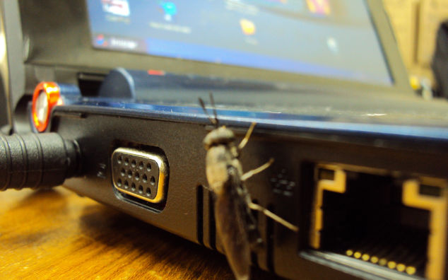

|
|
COSA E'
Heartbleed è il più pericoloso bug di OpenSSL che sia mai stato scoperto: le ultime indiscrezioni parlano del coinvolgimento di Barack Obama, che avrebbe autorizzato la NSA a sfruttarlo per accedere ai dati di milioni d’utenti del web in tutto il mondo — per ordire quello che, grazie alle dichiarazioni di Edward Snowden, è stato definito Datagate. La realtà potrebbe essere molto lontana da questa sorta di teoria del complotto, perché Heartbleed è “soltanto” un errore umano nell’aggiornamento della libreria commesso due anni fa.
Com’è possibile che una falla del genere passi inosservata per tanto tempo? È soprattutto un problema di dimensioni del codice, perché OpenSSL – usato sulla maggioranza dei server – è un progetto collaborativo, mantenuto da volontari, che negli anni è diventato troppo complesso da gestire. Tant’è che OpenSSL Software Foundation ha chiesto aiuto ai governi e alle imprese per assumere sei o più sviluppatori che s’occupino di chiudere i bug come Heartbleed. Ma com’è stato possibile identificare il problema e perché proprio adesso?
Il bug è paragonabile a quello che di recente ha afflitto GnuTLS su Linux e anche la soluzione al problema è la stessa. Un browser aggiornato dovrebbe essere sufficiente a proteggere i dati degli utenti, perché OpenSSL ha già ricevuto un aggiornamento che risolve la vulnerabilità di Heartbleed: il punto è che diversi server hanno utilizzato per un certo periodo di tempo la versione compromessa e sarà necessario cambiare la propria password sui siti web da essi ospitati. È probabile che nelle prossime ore molti chiedano di farlo.

|